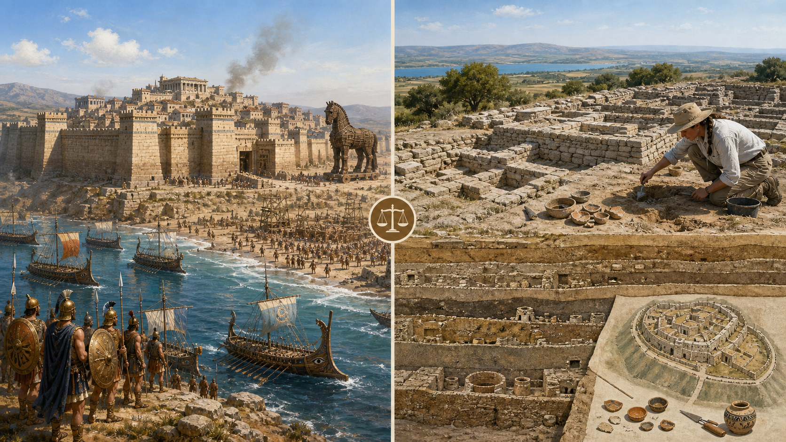
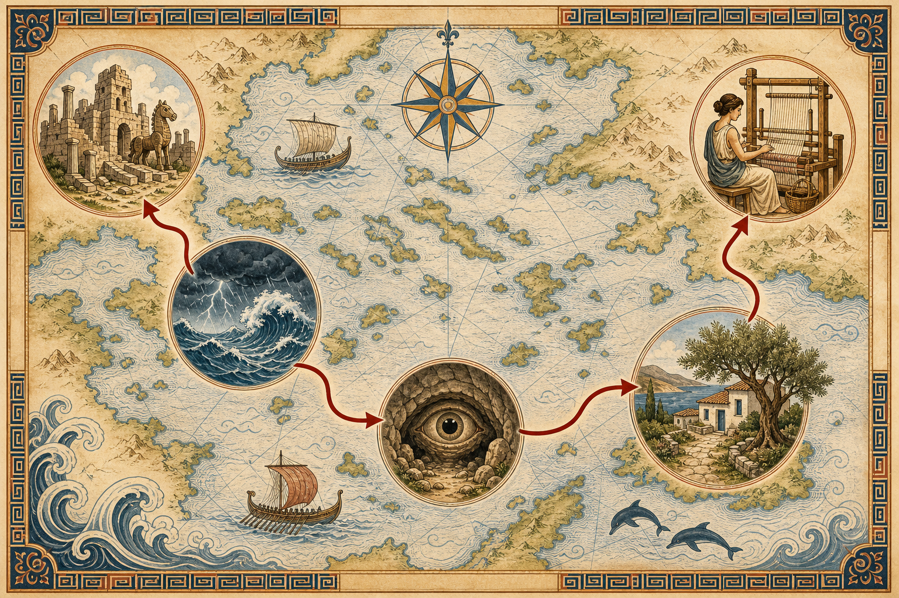
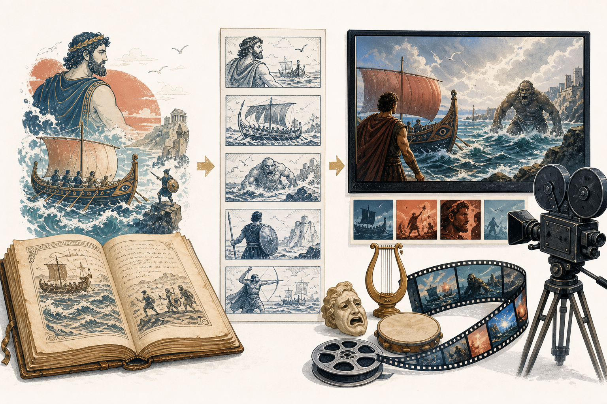

1
Observa y dialoga con el curso
Observa el tráiler y participa oralmente en las cinco preguntas de activación. No las copies ni las respondas en el cuaderno. Escucha otras interpretaciones y explica qué elementos del tráiler sostienen tus ideas.
Una investigación breve para comprender el viaje, sus personajes y las decisiones que toma el cine cuando adapta una obra clásica.
La película dialoga con un relato que ha sido contado durante siglos. Nuestro propósito no es memorizar toda la mitología griega, sino reunir claves que permitan observar qué conserva, transforma o actualiza la versión cinematográfica.
Observa, activa tus conocimientos, investiga y formula una hipótesis. Todo este bloque se completa antes de ver la película.
Publicado por Universal Pictures México. Después de verlo, participa en un diálogo breve con el curso. En esta parte no escribas: escucha, comenta y relaciona las intervenciones de tus compañeros.
Escucha la explicación y registra en tu cuaderno solamente las ideas que te ayuden a comprender la película.
Observa el tráiler y participa oralmente en las cinco preguntas de activación. No las copies ni las respondas en el cuaderno. Escucha otras interpretaciones y explica qué elementos del tráiler sostienen tus ideas.
Durante el video anota una idea sobre cada concepto:
Trabajen solo el tema asignado. En el cuaderno deben quedar tres datos importantes, una clave para observar la película y una pregunta que la película debería responder.
Cada grupo dispone de un minuto. Comunica su idea principal, una clave de observación y su pregunta. Mientras escuchas, registra una idea nueva aportada por otro grupo.
La tradición literaria y la investigación histórica no responden exactamente las mismas preguntas. Compararlas permite distinguir relato, hipótesis y evidencia.

Una ciudad construida por la poesía épica: héroes, dioses, honor, conflicto y memoria colectiva. Pregunta qué función cumple Troya dentro del relato.
Un sitio arqueológico con distintas capas de ocupación. Los restos aportan evidencias sobre ciudades reales, pero no prueban por sí solos todos los episodios del poema.

Se forman hasta doce grupos. El profesor asigna un tema; dos grupos investigan cada tema para poder comparar sus hallazgos.
Antes de cerrar la actividad, copia y completa en forma individual:
La imagen, el sonido, la actuación, la música y el montaje permiten enfatizar aspectos distintos de una misma historia. Después de la función volveremos a tu hipótesis y la contrastaremos con escenas concretas.
Durante la película recuerda cuatro focos: viaje o regreso, representación del protagonista, dilema humano y decisión audiovisual.

Retoma lo escrito antes de la función y contrástalo con escenas concretas. Aquí debes demostrar cómo cambió o se confirmó tu interpretación.
No responder antes de ver la películaEscribe tres escenas importantes, dos ideas o emociones provocadas por la película y una pregunta que haya quedado abierta.
Indica si se confirmó, se modificó o fue descartada. Justifica tu decisión mencionando una escena específica.
Selecciona algo que la película conserve o cambie y explica qué efecto produce mediante imagen, sonido, actuación o montaje.
| Elemento | ¿Qué conserva? | ¿Qué transforma? | Evidencia de una escena | Posible propósito |
|---|---|---|---|---|
| Protagonista | ||||
| Viaje o regreso | ||||
| Conflicto o dilema | ||||
| Recursos audiovisuales |
Responde en tu cuaderno, en un texto de 180 a 250 palabras:
¿La película utiliza el relato clásico solamente como una aventura o lo transforma para reflexionar sobre un problema humano vigente?